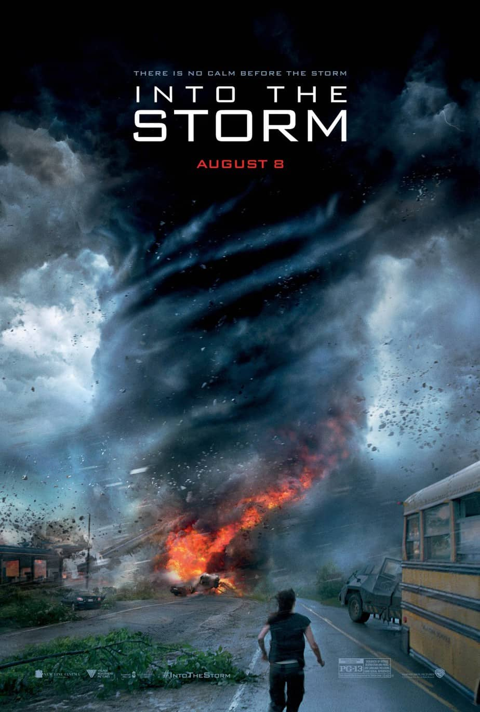

Physical Science (PS) ATMO1010
Severe & Hazardous Weather
This course introduces the fundamentals of the atmosphere with a focus on severe and hazardous weather, including impacts on human activities and the environment. Severe weather topics will be used to explore our dynamic atmosphere, including hurricanes, thunderstorms, tornadoes, snowstorms, and more.
Signature Assignment: Weather in the Movies
For this project, I analyzed the scientific accuracy of a film that features a significant weather phenomenon. I chose the 2014 disaster film Into the Storm, which depicts a fictional outbreak of destructive tornadoes. The blog post below examines how the movie uses weather to advance its plot, how realistic its portrayal of tornadoes really is, and what the science behind EF-5 tornadoes actually tells us.
I. Introduction – Hollywood’s Tempest
In this post, I dive into the 2014 disaster film Into the Storm and analyze how it handles severe weather, particularly tornadoes. The movie follows a fictional outbreak of destructive storms in Silverton, Oklahoma, and is presented in a chaotic “found-footage” format that leans heavily on visual spectacle. What makes it stand out—aside from the intense CGI—is its attempt to portray an extreme weather scenario that feels urgent and terrifying. When it was first announced, some people in the meteorology community hoped it might have a similar effect as Twister (1996), which famously inspired many students to pursue careers in weather science. But while Twister is often remembered for blending drama with actual meteorological concepts, Into the Storm has mostly drawn criticism for its unrealistic portrayals and dangerous messaging. Instead of sparking curiosity about atmospheric science, it leans into exaggerated destruction and questionable decision-making. In this post, I explore just how accurate—or inaccurate—the film is by looking at some of its most dramatic weather moments, including its portrayal of EF-5 tornadoes, fire-based vortices (known as “firenadoes”), and the idea of tornadoes merging into one massive storm. I’ll also reflect on how the film handles storm chasing culture and whether it reinforces or undermines real-world safety practices.
II. Overall Scientific Plausibility
While the movie’s visuals are undeniably intense, its scientific accuracy has been widely questioned—especially by professionals in atmospheric science. One PhD student in the field even said that “almost everything” about the film was wrong. Some meteorologists acknowledged it had fewer technical errors than Twister, but even then, major details were misrepresented. For example, the movie incorrectly shows Doppler radar being used to predict weather nearly half a day in advance. In reality, Doppler radar is meant to detect what’s happening right now, not what’s coming hours later. The film also throws around scientific terms like “cloud seeding” without providing any context or using them correctly, which can leave viewers confused or misinformed.
Critics outside the scientific community had similar complaints. While many praised the film’s special effects and high-stakes visuals—calling them “dazzling” and “flawlessly rendered”—they also pointed out that the story felt hollow. The characters lacked depth, the dialogue was flat, and the attempts to tie the plot to real-world events like Hurricane Katrina or climate change felt like afterthoughts. As a result, the movie ends up feeling more like a thrill ride than something viewers can learn from. And with social media full of real tornado footage recorded by actual people, many critics questioned the point of watching “fake found footage” when authentic videos are freely available online. In that way, Into the Storm struggled to justify itself—not just scientifically, but narratively. It tries to impress with realism through visuals, but it lacks the thoughtful storytelling and accuracy that today’s viewers expect when watching movies about real-world dangers.
III. EF-5 Tornadoes – Fact vs. Fiction
In Into the Storm, the story builds up to a massive, devastating EF-5 tornado—the kind that levels everything in its path and feels almost apocalyptic. On screen, it’s portrayed as a terrifying force of nature, and visually, the film does a decent job capturing how destructive a real EF-5 could be. But when you dig into the science, there’s a big gap between what the movie shows and how these tornadoes actually form.
In reality, most EF-5 tornadoes begin inside massive thunderstorm systems known as supercells. These storms are powered by a strong, rotating updraft called a mesocyclone, which is formed when wind speeds and directions change dramatically with height (this is called wind shear). When that rotation gets pulled toward the ground—usually with the help of downdrafts that push cool air downward—it can develop into a tornado. The Enhanced Fujita (EF) scale, which was adopted in the U.S. in 2007, classifies tornadoes based on the damage they cause. An EF-5 is the highest rating, with estimated wind speeds of over 200 miles per hour. These are extremely rare: EF-5s account for less than 0.1% of all tornadoes and haven’t been confirmed in the U.S. since 2013.
While the destructive power of the EF-5 in the movie lines up with what we’d expect from a storm of that magnitude—buildings getting flattened, vehicles tossed like toys—the way it forms in the movie is pure fantasy. Into the Storm shows two tornadoes literally merging together to form one “super tornado,” which is not something meteorologists have ever observed happening in real life. Although supercells can spawn multiple tornadoes in close proximity, the idea of them fusing into one more powerful funnel is a cinematic invention. And then there’s the infamous scene where characters shelter in a storm drain and survive the direct hit from the EF-5. That’s not just unrealistic—it’s dangerous misinformation. Storm drains are not safe places during tornadoes, especially those with extreme wind speeds. They can flood, collapse, or suck debris into confined spaces, turning them into deadly traps.
The movie also unintentionally reflects how complicated tornado classification really is. Many tornadoes capable of EF-5-level destruction may not receive that rating unless they strike something that provides enough damage evidence—like a well-built home that gets completely swept away. In recent years, some meteorologists have argued that the EF-5 rating threshold may need to be revised, since some tornadoes that would’ve been labeled F5 under the older Fujita scale are now being rated EF-4. So even the way we talk about these storms is evolving. Into the Storm captures the visual intensity of an EF-5, but it simplifies the science behind it—and overstates how such a tornado might behave in real time.
IV. “Firenadoes” and Other Cinematic Flourishes
One of the most jaw-dropping moments in Into the Storm is the scene where a tornado bursts into flames and becomes a swirling vortex of fire—a so-called “firenado.” Visually, it’s one of the film’s most intense sequences: a massive funnel cloud spinning at high speed, engulfed in flame, pulling in fuel tanks, debris, and even people. It’s terrifying and dramatic—but how real is it?
The answer is complicated. What the movie is portraying is loosely based on a real phenomenon called a fire whirl. Fire whirls can occur during wildfires when intense surface heat causes air to rise rapidly, creating a spinning column of flame and smoke. These usually form in chaotic wildfire conditions and are often fueled by dry brush, turbulent winds, and unstable heat flow. Under the right circumstances, these whirls can grow into dangerous mini-tornadoes of fire, and while most are relatively small, some have reached the size and strength of low-end tornadoes.
However, what the movie shows goes far beyond a standard fire whirl. In Into the Storm, a fiery explosion triggers an already active tornado to suddenly ignite and transform into a large-scale firenado. While some experts acknowledge that it is theoretically possible for a tornado to pass over a source of intense heat and fire, creating a brief hybrid vortex, the exact scenario shown in the film is extremely exaggerated. Meteorologists have pointed out that for a tornado to maintain its structure and also carry flames at that scale would require conditions that are not only rare but highly unstable. A real firenado wouldn’t look quite as cinematic, nor would it last as long or travel with the same visual consistency.
Still, nature has surprised us before. On July 12, 2025, just days before this blog was written, Utah’s San Juan County experienced a confirmed fire tornado over the Deer Creek Fire. It was a real, documented event—though much smaller than the movie version—and even damaged a Bureau of Land Management fire vehicle. While the film’s firenado is clearly dramatized for shock value, the core idea is grounded in something that can, and does, happen under the right circumstances.
The takeaway? The fire tornado in Into the Storm might be flashy Hollywood fiction, but it’s rooted in an extreme version of a real weather event. Just don’t expect it to happen from a single explosion or spin around throwing flaming debris in slow motion while dramatic music plays.
V. Storm-Chasing Ethics and Safety
One of the biggest differences between Into the Storm and real-world meteorology is how it portrays storm chasers. In the movie, chasing storms feels more like a competitive sport than a scientific mission. Different teams race each other to get the best footage, risking their lives—and others’—in the process. They drive directly into tornado paths, abandon safety protocols, and even shelter in dangerous locations like storm drains and underpasses. While this makes for intense action scenes, it completely misrepresents how responsible storm chasing is actually done.
In reality, storm chasing is often carried out by trained meteorologists, researchers, and volunteers. Organizations like NOAA’s SKYWARN program train everyday citizens to observe severe weather and report their findings safely to the National Weather Service. The focus is on keeping a safe distance, using clear communication, and avoiding unnecessary risks. There are specific guidelines about staying off flooded roads, keeping your vehicle in good condition, always having an escape route, and never attempting to punch through a storm’s core—something the characters in the movie do multiple times without hesitation.
Storm spotters are also taught that overpasses are not safe shelters during tornadoes, despite what movies like this suggest. Wind can actually intensify under overpasses, turning them into dangerous wind tunnels filled with flying debris. Similarly, seeking shelter in a storm drain, as shown in the film’s climax, is an extremely unsafe choice. Storm drains can easily flood, collapse, or trap people during a tornado, especially if debris clogs the entrance or the structure isn’t stable.
The movie’s portrayal of storm chasing glamorizes behavior that real meteorologists and emergency managers warn against. While it tries to present its characters as heroic or passionate, the reality is that this kind of reckless behavior undermines public safety. It also risks sending the wrong message to amateur storm chasers or young viewers who might think these risky tactics are acceptable or effective. In truth, the best storm chasers are cautious, calculated, and focused on helping others—not putting themselves in unnecessary danger just to record dramatic footage.
VI. Conclusion – Lessons for Meteorology Education
Into the Storm tries to be a high-intensity disaster film, and visually, it delivers. The effects are strong, the pacing is nonstop, and the destruction is designed to overwhelm. But the film fails to balance entertainment with accuracy, and that’s where it falls apart. When you’re dealing with a topic as serious as extreme weather, misrepresenting how storms work—especially in a way that could influence public behavior—is not just lazy, it’s dangerous. The film constantly makes decisions that ignore or distort real science in favor of exaggerated spectacle.
By digging into the actual meteorological concepts behind the scenes, I saw how often the movie oversimplifies what’s happening in the atmosphere. EF-5 tornadoes are incredibly rare, but the movie throws them around like they’re part of an everyday summer forecast. Firenadoes don’t just appear because something explodes. Tornadoes don’t “merge” into a super-funnel. These aren’t just inaccuracies—they’re fabrications. The science of tornado formation is still being studied, and films like this only make the conversation harder by giving people the wrong expectations.
More than anything, I realized how these movies shape public understanding. If the only time someone sees a tornado is in a movie like this, and they think they can survive it by hiding in a drainage pipe or speeding toward it with a GoPro, that’s a problem. Films that treat severe weather like a video game don’t help anyone prepare—they just glorify recklessness. Meanwhile, the people who actually chase storms—scientists, meteorologists, spotters—are doing it for public safety, not clout.
This project reminded me that movies don’t have to be documentaries, but they do have a responsibility when they’re dealing with real threats. If you’re going to put natural disasters on screen, the least you can do is respect the science behind them. Otherwise, you’re just turning life-or-death events into entertainment with no context, and that doesn’t sit right with me. Especially now that I’ve seen how much work goes into understanding these systems—and how little of that makes it into the script.
VII. References & Source Credibility

- Movie Review – Into The Storm (2014) - Fernby Films
https://www.fernbyfilms.com/2014/12/15/movie-review-into-the-storm-2014/ - Into the Storm (2014 film) - Wikipedia
https://en.wikipedia.org/wiki/Into_the_Storm_(2014_film) - Into The Storm and the problems and pleasures of disaster movies
https://thedissolve.com/features/the-conversation/698-into-the-storm-and-the-problems-and-pleasures-of-d/ - Into the Storm review: Tornado movie shows dangerous storm chasing
https://slate.com/technology/2014/08/into-the-storm-review-tornado-movie-shows-dangerous-storm-chasing.html - Into the Storm - Official Discussion Thread [Spoilers] : r/movies
https://www.reddit.com/r/movies/comments/2d118r/into_the_storm_official_discussion_thread_spoilers/ - A meteorologist's review of 'Twisters:' How accurate is the science? - WKMG
https://www.clickorlando.com/weather/2024/07/18/a-meteorologists-review-of-twisters-how-accurate-is-the-science/ - Tornadoes FAQ - National Weather Service
https://www.weather.gov/lmk/tornadoesfaq - Tornadoes | NOAA
https://www.noaa.gov/education/resource-collections/weather-atmosphere/tornadoes - Tornado - Wikipedia
https://en.wikipedia.org/wiki/Tornado - EF Scale - National Weather Service
https://www.weather.gov/lsx/enhancedfujitascale - Enhanced Fujita scale - Wikipedia
https://en.wikipedia.org/wiki/Enhanced_Fujita_scale - Enhanced Fujita Scale of Tornado Intensity - Britannica
https://www.britannica.com/science/Enhanced-Fujita-Scale-of-Tornado-Intensity-1935157 - What Is the Fujita Scale? - Rainbow Restoration
https://rainbowrestores.com/blog/what-is-the-fujita-scale - Where Have the EF5s Gone? - Bulletin of the AMS
https://journals.ametsoc.org/view/journals/bams/aop/BAMS-D-24-0066.1/BAMS-D-24-0066.1.xml - List of F5, EF5, and IF5 tornadoes - Wikipedia
https://en.wikipedia.org/wiki/List_of_F5,_EF5,_and_IF5_tornadoes - NWS Norman Skywarn Program
https://www.weather.gov/oun/skywarn - How Wind Fans Flames Into 'Firenadoes' - Kids Discover
https://online.kidsdiscover.com/quickread/how-wind-fans-flames-into-firenadoes - Into the Storm trailer: Weather pet peeves - Slate
https://slate.com/technology/2014/07/into-the-storm-trailer-all-of-my-weather-pet-peeves-with-steven-quales-movie.html - Can two tornadoes collide and combine? - Reddit
https://www.reddit.com/r/askscience/comments/1y7pdj/can_two_tornadoes_collide_and_combine_to_become_a/ - What happens when two tornadoes collide? - Slate
https://slate.com/news-and-politics/2011/04/what-happens-when-two-tornadoes-collide.html - Merging… - r/tornado - Reddit
https://www.reddit.com/r/tornado/comments/14rregz/merging/ - Association of Cell Mergers with Tornado Occurrence - AMS Confex
https://ams.confex.com/ams/pdfpapers/141784.pdf - What we know and don't know about tornadoes - Physics Today
https://pubs.aip.org/physicstoday/article/67/9/26/414837/What-we-know-and-don-t-know-about-tornado - Into the Storm: Canadian transforming tornado science - Canadian Geographic
https://canadiangeographic.ca/articles/into-the-storm-the-canadian-transforming-tornado-science/ - NWS SKYWARN Storm Spotter Program
https://www.weather.gov/skywarn/ - An Introduction to Storm Observation - National Weather Service
https://www.weather.gov/oun/stormspotting - Storm chasing - Wikipedia
https://en.wikipedia.org/wiki/Storm_chasing - Tornado Safety - National Weather Service
https://www.weather.gov/safety/tornado
Final Thoughts
Into the Storm goes full disaster movie with its tornado drama, but underneath the chaos lies a foundation of real meteorology. The science is exaggerated—but not totally fiction. If anything, it gets people curious about EF-5s... and hopefully, helps more folks take real storms seriously.